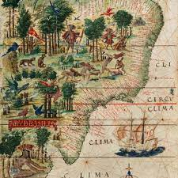
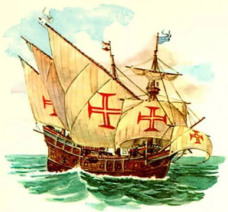
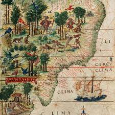
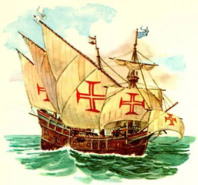
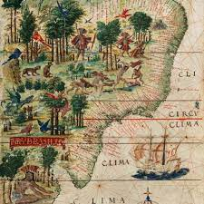
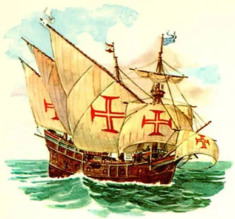

Foundation The discovery of Brazil, on April 22, 1500, by the fleet commanded by Pedro Álvares Cabral, bound for the Indies, is part of the cycle of Portuguese maritime expansion. Initially called Terra de Vera Cruz, then Santa Cruz and, finally, Brazil, the new land was explored at first due to the extraction of pau-brasil, a red wood used in dyeing in Europe, which gave the land its name. Several exploratory expeditions (Gonçalo Coelho, Gaspar de Lemos) and bodyguards (Cristóvão Jacques) were sent by the King of Portugal, in order to explore the coast and fight pirates and privateers, mainly French, to guarantee the possession of the land. The trading post system, already used in trade with Africa and Asia, was used both for defense and to carry out the barter (exchange) of pau-brasil with the indigenous people. The exploitation of pau-brasil, a monopoly of the Portuguese Crown, was granted to the New Christian Fernão de Noronha.


The following discussion focuses on Brazilian history from the time of European settlement. For a treatment of the country in its regional context, see Latin America, history of.
Tupian-speaking Indians inhabited the coastal areas and were among the more significant of the tropical forest groups. Portuguese explorers of the region first encountered Tupians and principally dealt with them for many years. Indeed, Tupians may have been the most important Indian influence in Brazil’s early colonial period and in the culture that subsequently developed; however, European diseases decimated the indigenous population, and many surviving Indians endured harsh treatment under Portuguese domination.
Archaeological sites near the Amazonian towns of Santarém and Monte Alegre and elsewhere in Brazil show that the region has been inhabited since at least 9000 BC. Mixed communities of farmers, fishers, and hunters and gatherers developed in the Amazon lowlands, whereas hunters and gatherers predominated in the drier savannas and highlands. Between two million and six million indigenous Indians lived in the region at the time of European contact in 1500.
Early period
Exploration and initial settlement
Europeans explored the Brazilian coastline only after mapping parts of the Caribbean Sea and the northeastern coast of South America; moreover, intensive exploration of Brazil resulted indirectly from Portugal’s efforts to expand its colonies in Africa and Asia. In 1498 the Portuguese navigator Vasco da Gama discovered an all-water route to the Indies and the Spice Islands via Africa’s Cape of Good Hope. The Portuguese king, hoping to capitalize on this discovery, dispatched an imposing armada to India under Pedro Álvares Cabral, whose sailing directions had been drawn up by da Gama himself. To avoid the calms off the Gulf of Guinea, Cabral bore so far to the west that on April 22, 1500, he sighted the mainland of South America. The Treaty of Tordesillas (1494) between Spain and Portugal had established a line at about longitude 46° 30′ W that divided Spanish (west) and Portuguese (east) claims in the New World. The region sighted by Cabral lay well within the Portuguese zone, and the crown promptly claimed it. Portugal’s new possession was initially called Vera Cruz (“True Cross”), but it was soon renamed Brazil because of the copious amounts of brazilwood (pau-brasil) found there that yielded a valuable red dye.
 


